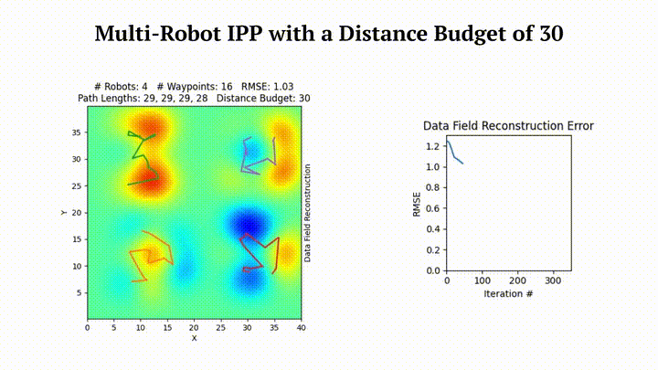
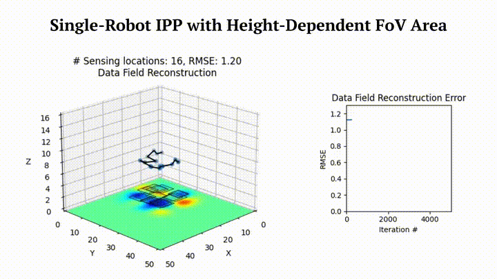
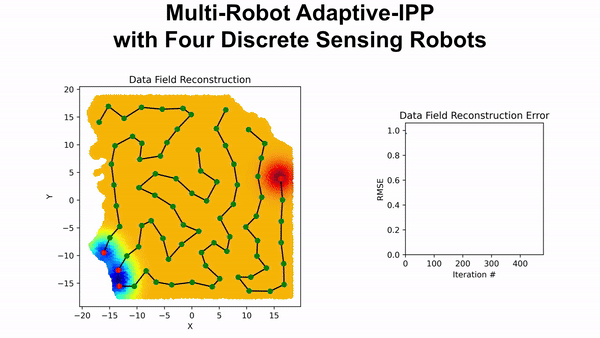
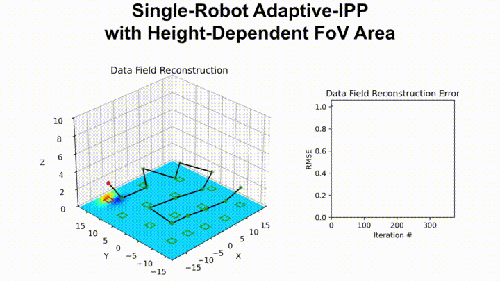

Home


SGP-Tools is a software suite for Sensor Placement and Informative Path Planning.
The library includes python code for the following:
- Greedy algorithm-based approaches
- Bayesian optimization-based approaches
- Genetic algorithm-based approaches
- Sparse Gaussian process (SGP)-based approaches




Installation
The library is available as a pip package. To install the package, run the following command:
Installation from source:
git clone https://github.com/itskalvik/sgp-tools.git
cd sgp-tools/
python3 -m pip install -r requirements.txt
python3 -m pip install -e .
Note: The requirements.txt file contains packages and their latest versions that were last verified to be working without any issues.
Quick Start
Please refer to the example Jupyter notebooks demonstrating the methods included in the library 😄
Method Summary
Datasets
- High-resolution topography data can be downloaded from NOAA Digital Coast
- High-resolution bathymetry data can be downloaded from NOAA Digital Coast
About
Please consider citing the following papers if you use SGP-Tools in your academic work 😄
@misc{JakkalaA23SP,
AUTHOR={Kalvik Jakkala and Srinivas Akella},
TITLE={Efficient Sensor Placement from Regression with Sparse Gaussian Processes in Continuous and Discrete Spaces},
NOTE= {Preprint},
YEAR={2023},
URL={https://itskalvik.github.io/publication/sgp-sp},
}
@inproceedings{JakkalaA24IPP,
AUTHOR={Kalvik Jakkala and Srinivas Akella},
TITLE={Multi-Robot Informative Path Planning from Regression with Sparse Gaussian Processes},
booktitle={IEEE International Conference on Robotics and Automation, {ICRA}},
YEAR={2024},
PUBLISHER = {{IEEE}},
URL={https://itskalvik.github.io/publication/sgp-ipp}
}
Acknowledgements
This work was funded in part by the UNC Charlotte Office of Research and Economic Development and by NSF under Award Number IIP-1919233.
License
The SGP-Tools software suite is licensed under the terms of the Apache License 2.0. See LICENSE for more information.